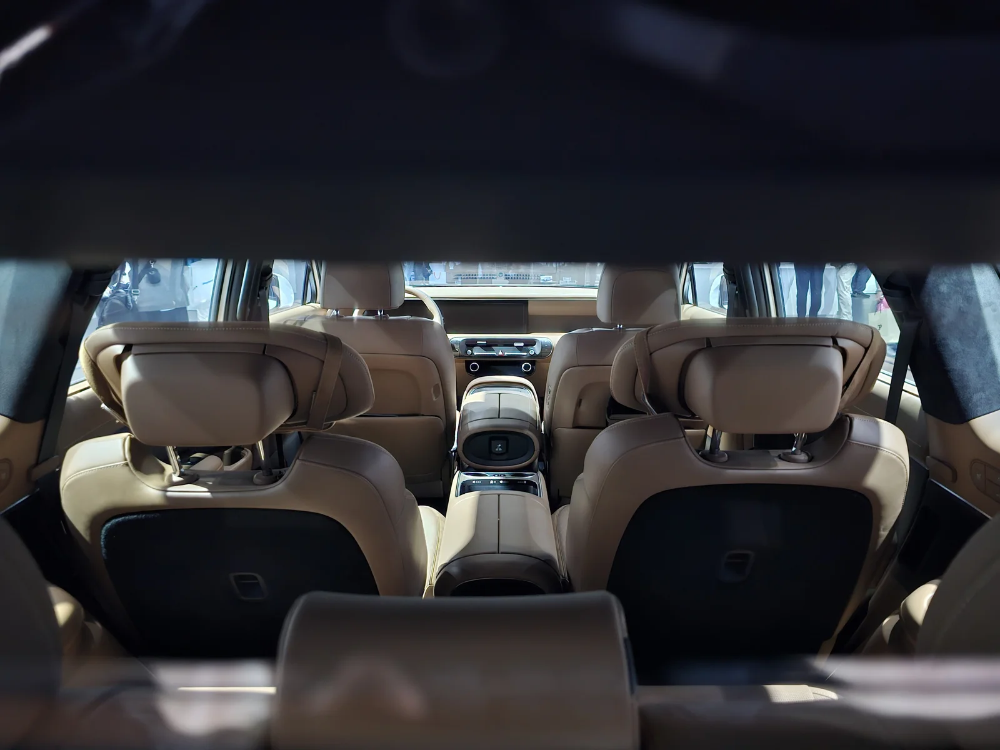
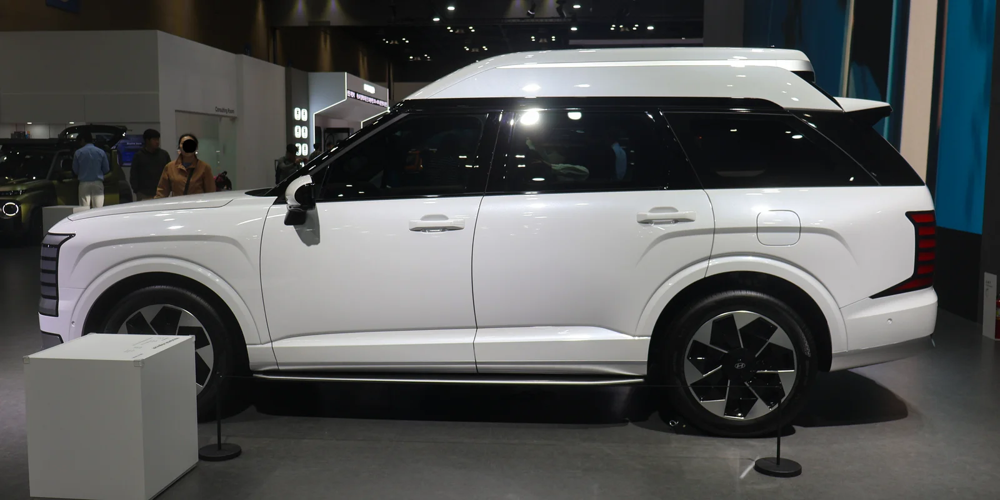
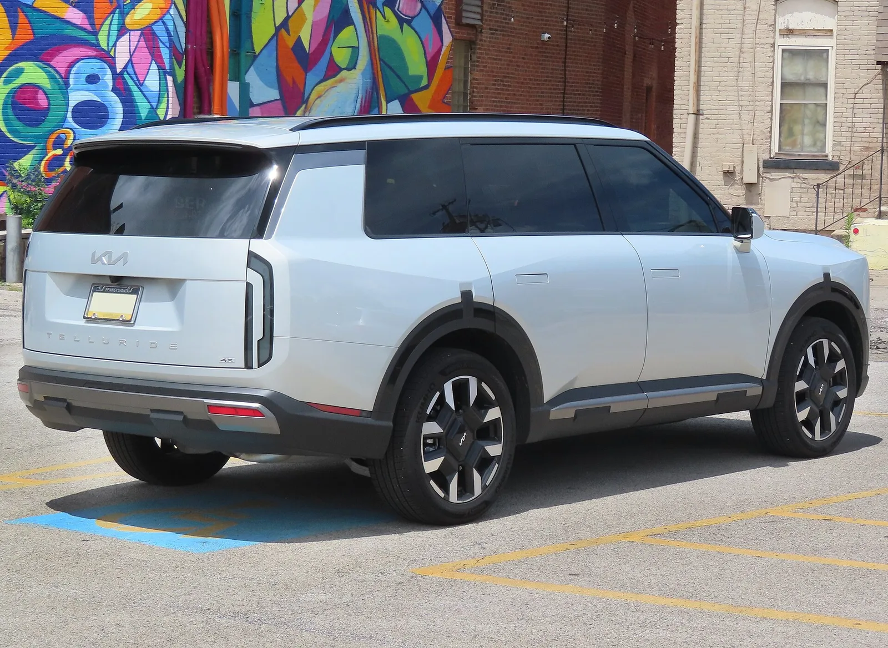
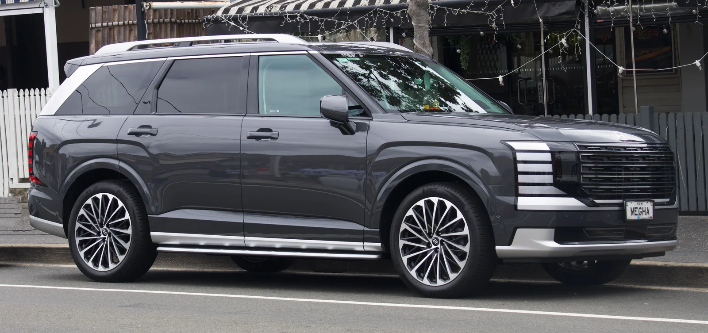

▲ 현대 팰리세이드 완전변경 모델 실내. J.D. Power 조사에서 현대는 2026년 858점을 받아 아우디를 앞질렀다 ⓒ 현대차
미국 시장조사업체 J.D. Power의 2026년 APEAL(Automotive Performance, Execution and Layout) 조사에서 현대와 기아가 아우디·아큐라·인피니티를 앞지른 것으로 나타났다. APEAL은 신차 구매 후 첫 90일 동안의 소유자 만족도를 디자인·성능·편의성·기술 경험 등 여러 영역에서 측정하는 조사로, 매년 완성차 브랜드의 상품성을 가늠하는 지표로 활용된다.
1. APEAL이 측정하는 것

▲ 현대 팰리세이드 완전변경 모델. APEAL 조사는 신차 구매 후 90일 이내 소유자의 만족도를 측정한다 ⓒ 현대차
APEAL은 고장·결함 여부를 따지는 신뢰성 조사와 달리, 오너가 실제로 차를 소유하면서 느끼는 '만족감'에 초점을 맞춘다. 디자인이 마음에 드는지, 편안한지, 기술이 직관적으로 작동하는지 등을 종합해 점수를 매긴다. 즉 아무리 고장이 적어도 만족도가 낮을 수 있고, 반대의 경우도 가능한 별개의 지표다.
2. 격차는 여전히 있다 — 그러나 좁혀졌다

▲ 기아 텔루라이드 완전변경 모델. 기아는 857점으로 5년 내 최고치를 기록했다 ⓒ 기아
| 브랜드 | 2026년 APEAL 점수 | 현대(858점) 대비 |
|---|---|---|
| 메르세데스-벤츠 | 876점 | -18점 |
| 렉서스 | 870점 | -12점 |
| 볼보 | 863점 | -5점 |
| 현대 | 858점 | 기준 |
| 기아 | 857점 | -1점 |
최상위권인 메르세데스-벤츠(876점), 렉서스(870점)와 비교하면 현대·기아는 아직 12~18점 낮다. 다만 이 격차는 예년보다 줄어든 수치로, 현대는 5년간 844~858점 사이를 오가다 올해 최고치를 찍었고 기아 역시 845~857점 구간에서 올해 최고 점수를 받았다. 반면 아우디·아큐라·인피니티 같은 브랜드는 이번 조사에서 현대·기아보다 낮은 점수를 받았다.
3. 상승 배경 — 하이브리드가 만든 체감 품질
CarBuzz는 이번 상승의 배경으로 하이브리드 파워트레인 확대를 짚었다. 하이브리드 시스템이 늘어나면서 주행 중 부드러움과 정숙성이 좋아졌고, 인포테인먼트 등 인터페이스의 완성도도 함께 개선됐다는 것이다. 팰리세이드·텔루라이드처럼 최근 완전변경을 거친 대형 SUV가 브랜드 평균 점수를 끌어올리는 데 기여했을 것으로 풀이된다.

▲ 모터쇼에 전시된 팰리세이드 완전변경 모델. 최근 완전변경을 거친 대형 SUV들이 브랜드 평균 만족도를 끌어올렸다는 분석이 나온다 ⓒ 현대차
4. 다른 지표와 혼동하면 안 된다

▲ 기아 텔루라이드 후면. 만족도(APEAL)와 신뢰성(내구품질조사)은 서로 다른 별개의 지표다 ⓒ 기아
참고 J.D. Power는 APEAL(만족도) 외에도 신차 초기 품질을 보는 IQS, 장기 신뢰성을 보는 내구품질조사(VDS) 등을 별도로 발표한다. 이번 APEAL 점수는 '고장이 적다'는 의미가 아니라 '타면서 만족스럽다'는 의미에 가깝다.
실제로 앞서 다른 조사에서는 아우디가 BMW·벤츠보다 신뢰성 면에서 격차가 크다는 결과가 나온 바 있다. 이번 APEAL에서 아우디가 현대·기아보다 낮은 점수를 받은 것은 신뢰성과는 별개로, 오너들이 체감하는 만족도 측면에서 밀렸다는 의미로 해석해야 한다.

▲ 팰리세이드 완전변경 모델 측면. 만족도 점수가 오른다고 해서 곧 고장이 적다는 뜻은 아니다 ⓒ 현대차
5. 정리
체크포인트
- 현대·기아는 2026년 APEAL에서 아우디·아큐라·인피니티를 앞질렀다.
- 메르세데스-벤츠·렉서스와의 격차는 여전히 존재하지만 예년보다 좁혀졌다.
- APEAL은 만족도 지표이지 신뢰성 지표가 아니다, 다른 조사 결과와 혼동하지 않아야 한다.